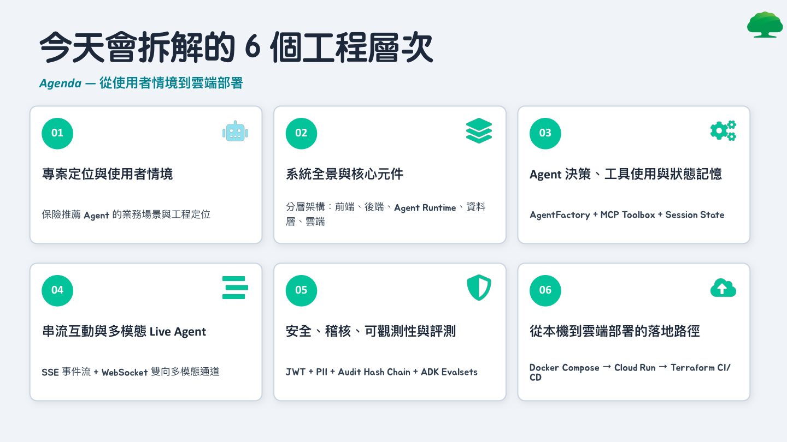
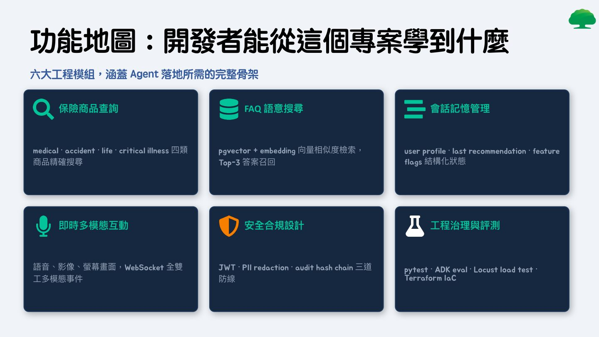
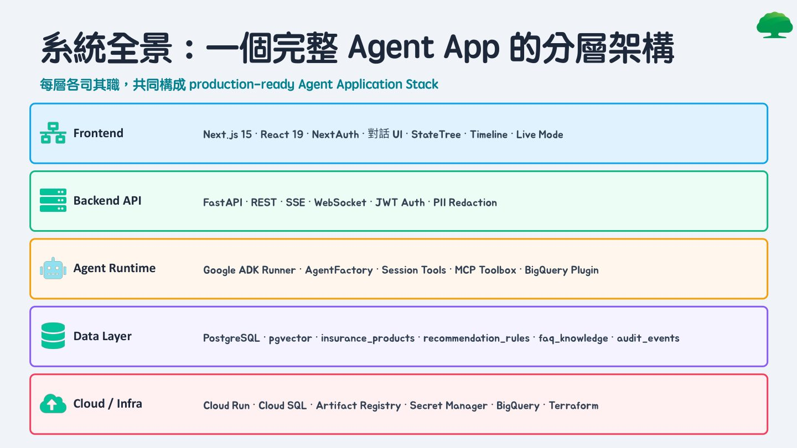
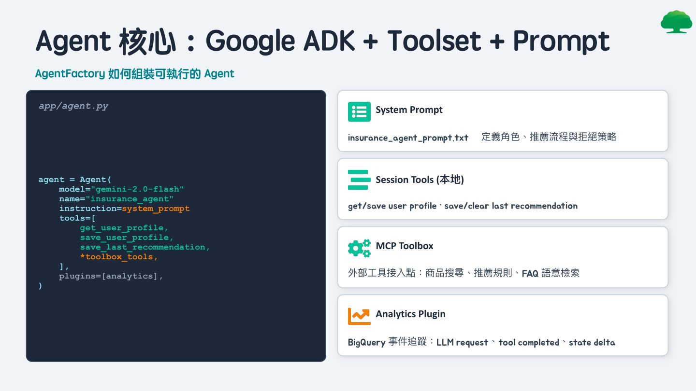

摘要
演講以一個保險商品推薦 Agent 為案例，拆解建構 production-ready Agent 應用所需的六個工程層次，從使用者情境定位、系統分層架構、Agent 決策與工具使用、串流與多模態互動，到安全稽核與最終雲端部署。內容展示如何以 Google ADK、MCP Toolbox、FastAPI 與 Next.js 等技術組合，打造具備會話記憶、即時語音影像互動與評測驅動開發流程的完整 Agent 系統骨架。
重點整理
- 以 AgentFactory 組裝 Agent，結合 System Prompt、Session Tools（本地工具）、MCP Toolbox（外部工具）與 Analytics Plugin
- 系統採五層架構：Frontend（Next.js/React）、Backend API（FastAPI）、Agent Runtime（Google ADK）、Data Layer（PostgreSQL + pgvector）、Cloud/Infra（Cloud Run、Terraform）
- Live Agent 透過 WebSocket 全雙工通道，支援語音、影像與螢幕畫面等多模態即時互動
- 安全設計採用 JWT 認證、PII Redaction 與 Audit Hash Chain 三道防線，確保機敏資料不外洩且紀錄不可竄改
- 採用 Evaluation-Driven Agent Development，以 ADK Evalsets 涵蓋核心流程、複雜情境、安全性、會話感知與多模態品質五大分類進行評測驅動開發
重點圖片／架構圖




專案定位：從問答走向推薦決策流程
演講的案例是一個保險推薦 Agent，其設計核心不只是 prompt，而是「Prompt + Tools + State + Policy」的完整執行閉環。使用者輸入年齡、預算與目標後，Agent 會將其結構化為 Profile State，判斷所需工具類型進行商品查詢，最終產出結構化推薦並留下稽核與品質評測紀錄，過程中支援主動追問與 Session 保存，讓對話狀態可持久化以支援後續追問與推薦回溯。
系統全景：五層分層架構
整體架構分為五層：Frontend 層使用 Next.js 15、React 19 與 NextAuth 打造對話 UI 與即時狀態呈現；Backend API 層以 FastAPI 提供 REST、SSE 與 WebSocket 端點並處理 JWT 認證與 PII 遮蔽；Agent Runtime 層基於 Google ADK Runner、AgentFactory、Session Tools 與 MCP Toolbox；Data Layer 使用 PostgreSQL 搭配 pgvector 儲存保險商品、推薦規則、FAQ 知識與稽核事件；Cloud/Infra 層則透過 Cloud Run、Cloud SQL、Artifact Registry、Secret Manager、BigQuery 與 Terraform 完成雲端部署與治理。
Agent 核心：AgentFactory 與工具組裝
AgentFactory 負責組裝可執行的 Agent，將 System Prompt（定義角色、推薦流程與拒絕策略）、本地 Session Tools（取得與儲存使用者 Profile、儲存或清除上次推薦）、MCP Toolbox（作為外部工具的接入點，處理商品搜尋、推薦規則與 FAQ 語意檢索）以及 Analytics Plugin（透過 BigQuery 追蹤 LLM request、工具執行完成與狀態變化事件）整合為單一 Agent 執行單元。
Live Agent：多模態雙向即時互動
為了支援語音、影像與螢幕畫面等多模態即時互動，前端透過多個 Hooks（音訊擷取、音訊播放、相機擷取、螢幕擷取、統一 WebSocket 連線管理）與後端 LiveAgentService 進行全雙工通訊，分別以 Upstream Task（Client 到 Agent）與 Downstream Task（Agent 到 Client）並行處理 PCM 音訊、文字、圖片與影格，並支援取消與錯誤恢復，圖片會先縮放至合適尺寸並轉為 JPEG 格式再傳輸。
安全設計與評測驅動開發
安全機制包含 JWT Bearer Token 認證、PII Redaction（敏感資料遮蔽）與 Audit Hash Chain（不可竄改的稽核紀錄鏈）三道防線。開發流程則採用 Evaluation-Driven Agent Development，強調 Prompt 的任何改動都必須經過評測而非憑感覺，透過定義指標、建立 Evalsets、以 ADK 執行評測、檢視失敗案例並更新 Prompt 或工具的迴圈，評測分類涵蓋核心推薦流程、複雜情境處理、安全性（PII 不外洩、拒絕不當請求）、會話感知能力，以及即時多模態互動品質。